MAPAS DE KARNAUGH
En este enlace tenéis una web para simplificar mapas de Karnaugh. Muy útil para comprobar ejercicios en casa:
https://charlie-coleman.com/experiments/kmap/
SIMULADORES ONLINE DE CIRCUITOS DIGITALES
Para la tarea de esta página usaremos CircuitJS, un simulador de circuitos que funciona en el navegador sin instalar nada. Sus gestos básicos (cambiar un valor, dibujar un cable y entregar) están en la ficha CircuitJS en 3 gestos (PDF).
Para practicar en casa con puertas lógicas también sirven estas otras herramientas online:
https://www.opencircuits.io
https://circuitverse.org/simulator
https://logic.ly/demo/
Por último, en TinkerCAD (https://www.tinkercad.com) también podemos simular circuitos lógicos, pero de forma realista porque podemos usar circuitos integrados de varias puertas. Así, podemos simular el montaje físico antes de realizarlo con componentes reales.
TAREA: diseñar un circuito decodificador para un display de 7 segmentos
La tarea consiste en diseñar un circuito lógico que reciba como entrada un número del 0 al 15 codificado en binario (con 4 bits) y genere 7 salidas que puedan conectarse a un display de 7 segmentos para que se muestre en el display la cifra hexadecimal correspondiente a dicho número.
Se hace en equipo: el equipo entrega un solo proyecto y, además, cada persona entrega su propia memoria técnica (paso 8). Para hacerlo correctamente necesitáis lo siguiente:
1 - Diseñaremos el circuito con puertas lógicas en CircuitJS, partiendo del circuito base de la tarea. Ábrelo siempre desde este enlace: ya trae las entradas y el display.
2 - Las entradas (A, B, C y D) son cuatro entradas lógicas: cada una vale 0 o 1 y cambia al hacer clic sobre su número. A es el bit de mayor peso (8) y D, el de menor (1). Por ejemplo, para el número 5 (0101 en binario): A = 0, B = 1, C = 0 y D = 1. En esta tarea las variables son A, B, C y D, en mayúscula; las letras a–g son los segmentos del display, no variables. Escribid cada salida (S1, S2, …, S7) en función de A, B, C y D.
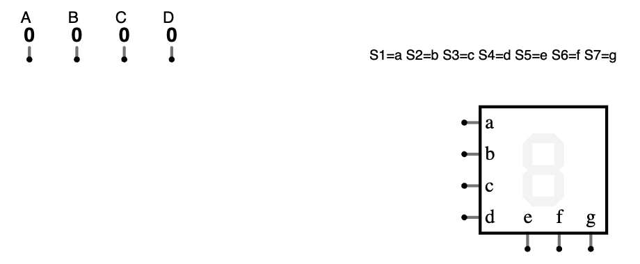
3 - La salida es el display de 7 segmentos de LED, que ya está en el circuito base. Tiene 7 entradas, de la a a la g, y cada una enciende un segmento. Vuestras salidas S1 a S7 se conectan, en este orden, a las entradas del display: S1 → a, S2 → b, S3 → c, S4 → d, S5 → e, S6 → f y S7 → g. La figura indica qué segmento enciende cada salida:
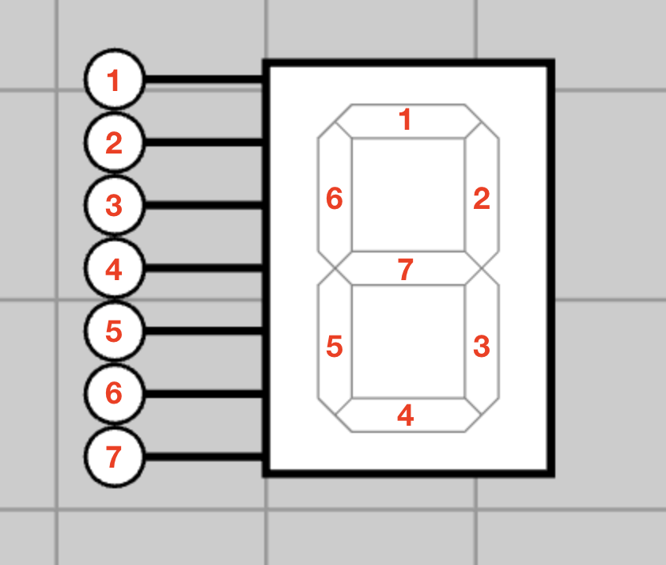
Las diferentes salidas deben ser las siguientes:
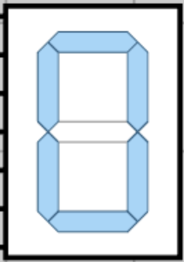 |
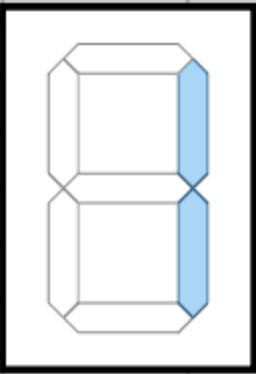 |
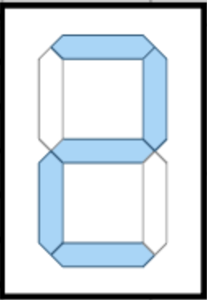 |
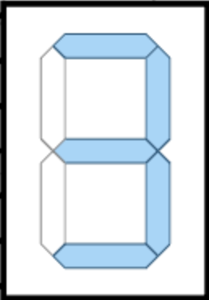 |
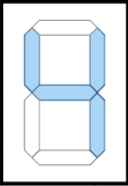 |
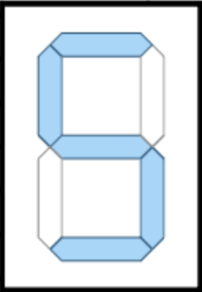 |
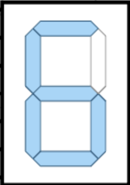 |
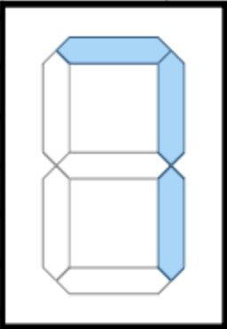 |
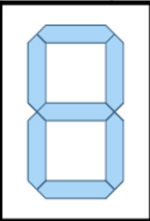 |
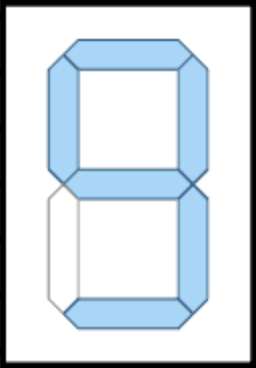 |
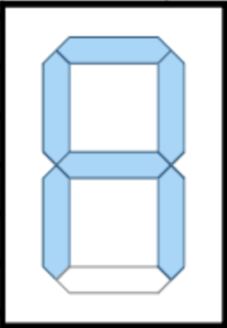 |
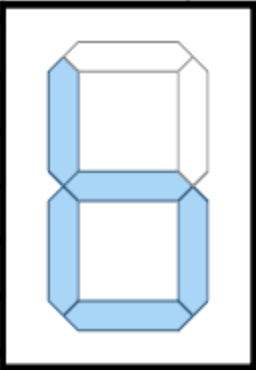 |
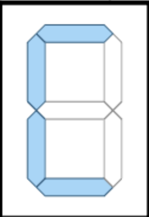 |
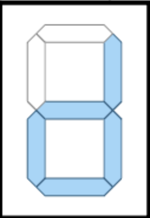 |
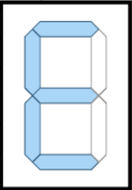 |
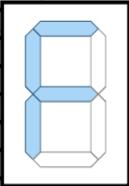 |
4 - Escribir las tablas de verdad para las 7 salidas S1, S2, ..., S7 en un documento que entregaréis en PDF con el nombre decodificador.pdf.
5 - Simplificar mediante Karnaugh las 7 señales, obteniendo las expresiones booleanas más sencillas posibles para cada una. Incluir esta simplificación y las expresiones obtenidas en el documento anterior.
6 - Montar el circuito con las puertas lógicas correspondientes (menú Dibujar → Puertas lógicas, entrada y salida: Inversor, Puerta AND, Puerta OR…), simulando y comprobando el correcto funcionamiento para los 16 casos posibles. Si abajo a la derecha aparece el aviso «conexiones incorrectas», queda algún cable por conectar. Que no aparezca no basta: el simulador no avisa de las entradas del display ni de las de las puertas que queden sueltas. Antes de entregar, comprobad que no queda ningún punto sin cable y probad los 16 casos. No se pueden usar los componentes «Añadir decodificador de 7 segmentos», «Añadir ROM» ni «Insertar lógica personalizada»: harían el trabajo por vosotros.
7 - Entregar en la tarea «Proyecto · Decodificador para display de 7 segmentos» de Moodle tres cosas: el documento decodificador.pdf; el enlace del circuito (Archivo → Exportar como enlace… → Copiar al portapapeles), pegado en el texto en línea de la tarea; y el archivo del circuito (Archivo → Guardar como…, dejando el nombre que propone el simulador, y OK). El enlace de un circuito grande es muy largo: cópialo entero con el botón. Basta con que lo entregue una persona del equipo: la entrega queda hecha para todo el equipo. No pongáis vuestros nombres ni en el archivo ni dentro del circuito.
Entrega intermedia, obligatoria: al final de la primera sesión de montaje, entregad ya el enlace y el archivo, antes de apagar el ordenador, porque al reiniciarlo se borra lo que quede en él. En la sesión siguiente, abrid el enlace de vuestra entrega; si no abre, descargad el archivo de la entrega y usad Archivo → Abrir archivo…. Al terminar, sustituid el enlace y el archivo por los nuevos.
8 - Memoria técnica, individual. Además del proyecto del equipo, cada persona escribe su propia memoria técnica de una página: cómo planificó el equipo el trabajo y qué papel tuviste, qué decisiones de diseño tomasteis, qué resultados obtuvisteis y qué mejorarías. Escríbela sobre la plantilla de la memoria (al abrir el enlace se crea tu propia copia), descárgala en PDF y entrégala en la tarea «Memoria · Decodificador para display de 7 segmentos» de Moodle.